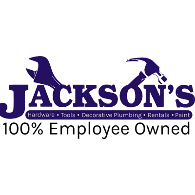

Abishek Gyawali
Junior UI / UX Designer
My Most
Recent Works and Blogs
Mobile Application Vs Website
Users can access the same accounts, profiles, and services on both platforms, ensuring a seamless experience regardless of the device used.What if I was a Human Interface Designer at Apple?
This is just my opinion and many of these things are implemented and will be implemented in the near future. I am in no way affiliated with Apple in any way.Project Entertainment LLC
Website Design for an Event Management CompanyJackson’s Hardware Website Redesign
The primary goal was to make the website easy to understand, and navigate, and provide a positive user experience.A ticketing solution for movie lovers
This movie ticket app ensures a smooth and simple user experience for easy ticket purchase.Accounting Dashboard Design
Accounting Dashboard designed to help individuals and businesses gain better control over their finances
Business Listing and Event Ticketing UI Redesign
New UI design concept and the landing page for Nepali Things LLC a leading ticket management company for Nepali EventsWebsite Redesign for INGO
As a UI/UX designer, taking on this project as my first has been an incredible learning experience, and I’m excited to showcase the transformation I’ve achievedBalancing Creativity and Technical Constraints in UX Design
When we say balancing technical constraints in UX design, it is not about sacrificing creativity, it is about harnessing difficulty to overcome technical challenges and creating exceptional user experiences.
My Design
Process
Define the Requirements
I kick things off by pinpointing the project's core business needs, writing down requirements, and getting a grasp of the desired outcomes, timelines, and team expectations. Keeping the lines of communication open with the team is major focus. At this stage, I also begin sketching out initial thoughts on the puzzle we're about to solve.
Discover the Issues
This is where I dig deep, gathering information, having conversations, and exploring the details of the problem. I may go through user feedback or find out why the current design is the way it is. If we don't have enough money or time for a comprehensive user research trip, I'll opt for casual interviews to avoid making decisions without a clear understanding.
Interpret the Results
During the decoding phase, I figure out who our users are, what motivates them, and what challenges they face. I create personas, map out their journeys, draw storyboards, and formulate problem statements, either creating new ones or improving existing ones. This is also the time when we establish our project goals and the metrics to gauge our success. It's typically a revealing and enlightening process.
Ideate over Solutions
The ideation phase – my personal playground. I get everyone in on the brainstorming action: developers, fellow designers, stakeholders, even the friendly neighborhood customer support team. We let the ideas flow freely, aiming for quantity over quality at this stage.
Prototype
Now, it's the moment to turn those great ideas into reality. I build an interactive prototype, whether it's a polished high-fidelity Figma design or a functional website, based on the project's pace and testing requirements.
Test, Iterate and Test Again
In the last phase, I thoroughly test our prototype with actual users. It could be a quick and casual assessment or a comprehensive usability testingevent. The outcomes act as our guiding beacon, revealing areas that require refinement and improvement. The key is to iterate and enhance until we achieve perfection.
What They Say
About Me?
Rajesh Thapa
Working with Abishek was a game-changer for our app design. His fresh perspective and attention to detail brought our vision to life. The result? An intuitive and visually stunning app that our users love! Looking forward to more collaborations.

Carolyn Emge
"Abishek exceeded our expectations with a complete website redesign and exceptional social media graphics. His expertise on subject matter transformed our online presence, while the eye-catching banners and posters enhanced our marketing efforts significantly. Professional, creative, and results-driven – I highly recommend Abishek for a seamless blend of design and impact."
Nayana Upadhyay
"Studying under Abishek has been a transformative experience. His unique approach of explaining concepts through art and design not only made learning UI/UX and graphics design enjoyable but also immensely easier to grasp. Each session felt like a creative journey, translating complex ideas into visual masterpieces. Grateful for the knowledge and artistic perspective gained under their guidance."